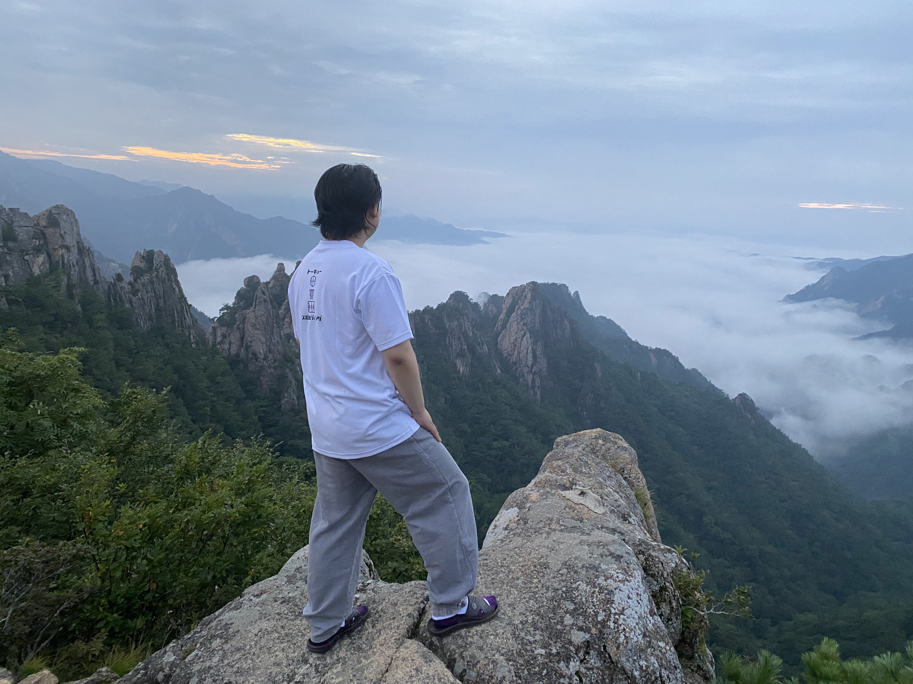
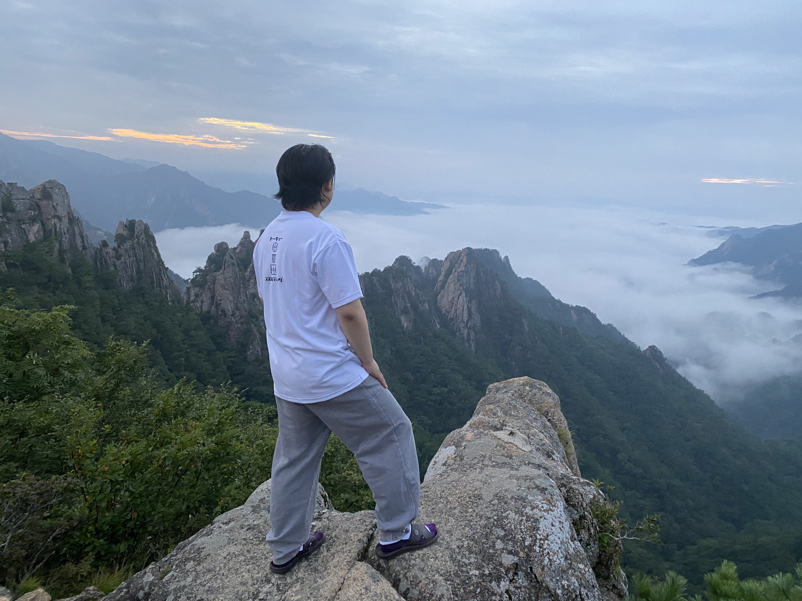

A Path to Performance
I am a senior at Columbia University studying mathematics.
I am interested in Complex Geometry, and its related areas.
Senior thesis: Geometric and Analytic Structure of The Yang-Mills Theory , advised by Prof. Duong H. Phong .
Email: cs4056@columbia.edu
A Path to Performance
